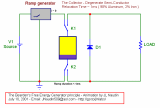

The Time Energy
Pump project
created on 09-19-97 - JLN Labs
- last update on 09-19-97
Toutes les informations et
schémas sont publiés gratuitement ( freeware ) et sont
destinés à un usage personnel et non commercial
All informations and
diagrams are published freely (freeware) and are intended for a private use and a non commercial
use.
The
TEP's Bifilar Coil Design :
TEP
Bifilar coil construction :
The Bifilar coil ( L1,L2) is the
main component of this oscillator and must be perfectly
constructed :
1) Take a 200 mm length (20 mm
diam) cardboard tube and 2 x 11.5 m of 5/10 magnetic wire (AWG
24).
2) Drill a small hole at each side of the tube for the wire, the
distance between the holes must be 190 mm.
3) Wind the two L1,L2 coils at the same time, as shown
below. You may glue the winding with cyanoacrylate.

4) Insulate properly an 125 mm wide
area in the middle of the bifilar.
5) Wind the feedback coil L3 with a
5/10 mm magnetic wire with 250 turns.
7) Put a dot (the hot side) on one
side of the bifilar to identify the polarity.
8) Check the bifilar coil with a
signal pulse (square) generator.
- a) connect the hot side of L1
with the hot side of L2
- b) connect your oscillocope
probe accross the L3 coil
- c) send a square pulse signal
on the side of L1 and L2 at the opposite of the hot side.
- d) if your bifilar coil is
wound correctly, you should see NO SIGNAL on the scope.
- 1) Initial state : K1, K2, K3,
K4 are opened - C1, C2 empty - V1=0V, V2=0V
- 2) Loading
sequence : K1 is closed - Measure V1 - calculate
Q1=C1*V1
- 3) K1 is
opened, K2 is closed - Measure V1 and V2 - calculate
Q1=C1*V1 and Q2=C2*V2
- 4) Unloading sequence: K2 is
opened then K4 is closed and K3 is closed
Compare the charge Q1 in step 2 with the total charge Q1 + Q2 in step 3...
About the Law of Charge Conservation :
The Law of charge conservation 1,2,3 has been introduced by Benjamen Franklin (1706-1790) :
- The charge
conservation law demonstration by the Harvard University
- Conservation
of charge demo
- The Law of
charge conservation
- The
Final Secret of Free Energy by Tom Bearden
- Use
of Step-Charged Capacitor as the Collector by Tom Bearden
- PRACTICAL
OVERUNITY ELECTRICAL DEVICES by Tom Bearden

The
Bearden's Free Energy Collector explained- The
Advanced TEP ( A-TEP v1.0 ) design and tests
Return to the TEP Project page